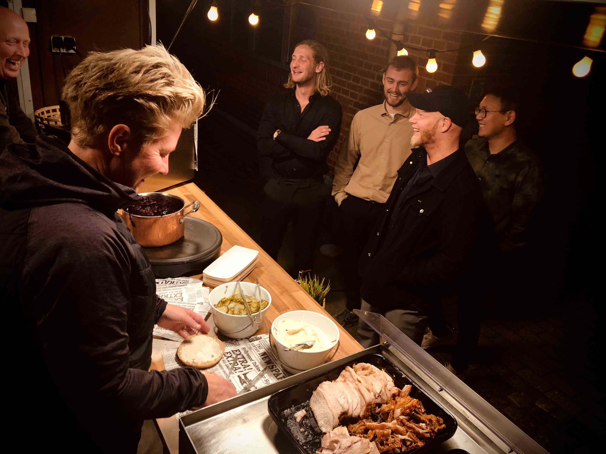

Om os
Taffelvognen er en super hyggelig Foodtruck ejet af Lene Ellebæk, som første gang kunne ses til diverse arrangementer i året 2019. Taffelvognens stilfulde udseende og hyggelige atmosfærde bidrager positivt til din fest eller til firmaarrangementer.

Det brede udvalg af mad er til en hver smag. Taffelvognen har et samarbejde med lokal catering i Skive. Maden består primært af økologiske råvare og hjemmelavet dressinger, sovs og toppings.
Det smager bare bedst!